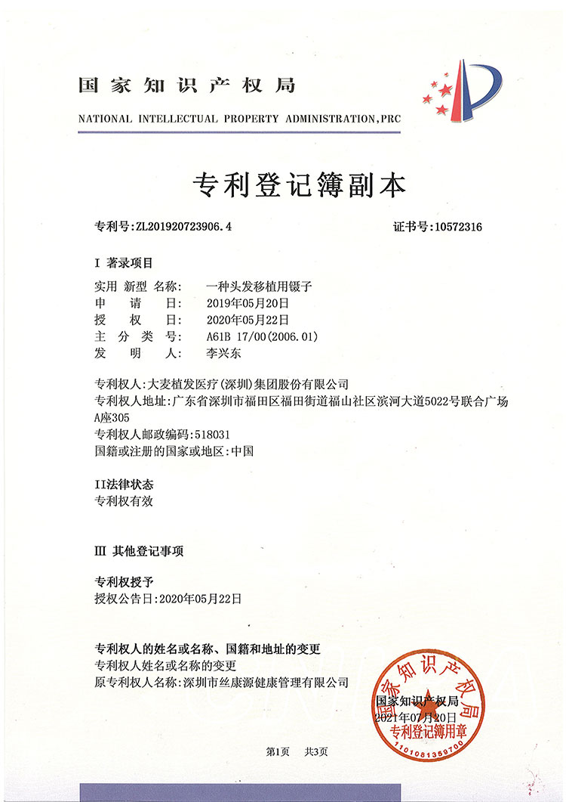
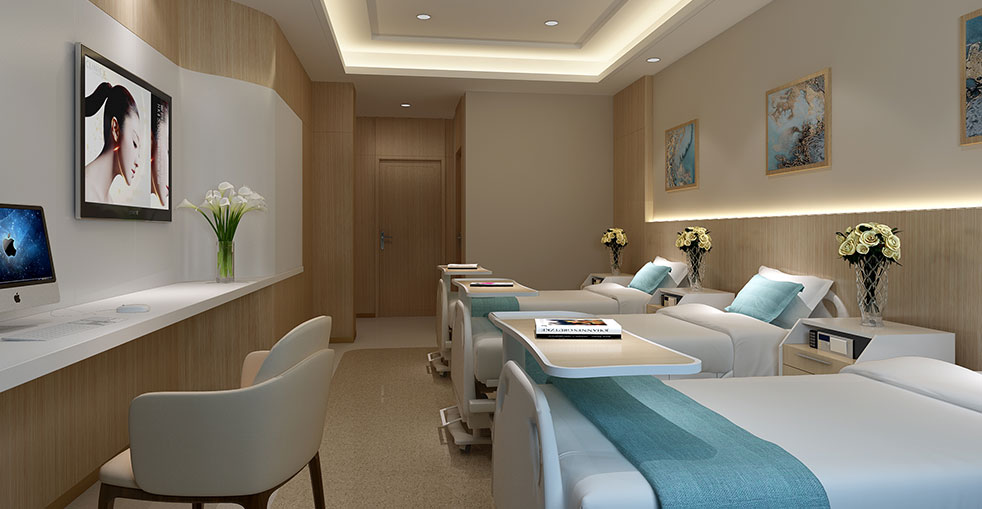

壓力大、節奏快，香港已成脫髮「重災區」，大麥專業醫師團隊為您解決
根據調查顯示，香港每3個成年人中就有1人受脫髮困擾。長期工作壓力大、生活節奏快、熬夜頻繁，加上空氣質素問題，導致越來越多年輕人加入脫髮行列。
然而，香港本地植髮市場存在三大痛點：價格高昂（根據香港診所報價，2000毛囊FUE植髮收費HK$45,000）、診所選擇少（合格植髮機構有限）、技術參差不齊（部分診所仍使用傳統FUT技術）。
越來越多香港市民選擇前往深圳進行植髮手術，享受同等甚至更優的技術，同時節省費用。
相比香港診所使用普通FUT或FUE技術，大麥專利的微針植髮創口僅0.6mm，毛囊存活率達95%以上，密度比傳統方法高20-30%，術後24小時即可洗頭，恢復更快、效果更自然。
M型脫髮、髮際線後退、頭頂稀疏、產後脫髮、疤痕性脫髮、眉毛/鬍鬚移植等，男女適用。一般18-65歲均可進行植髮諮詢。

大麥植髮醫師團隊擁有18年以上臨床經驗，專注於FUE微針植髮、不剃髮植髮等高難度手術。
香港成年人受脫髮困擾
香港植髮平均報價
高鐵香港直達深圳
已服務港澳患者
六大優勢，讓您的植髮之旅省心、省力、省錢
深圳植髮價格相比香港更具優勢。
擁有14項國家專利，革命性0.6mm微針植入筆，360°旋轉精準控制毛髮生長方向，密度比傳統方法高20-30%。
全國30多家直營診所，非加盟模式，確保統一醫療品質標準。深圳診所設備先進，環境舒適。
自2006年創立以來，已完成超過10萬例成功手術。沙利文認證「中國微針植髮領導者」，多次受邀世界植髮大會演講。
香港西九龍乘高鐵18分鐘直達深圳福田站，診所鄰近地鐵站，提供接站服務。術後可安心返回香港休養。
深圳診所配有粵語工作人員，從諮詢、面診到手術、術後跟進，全程可以用廣東話溝通，無語言障礙。
同等技術水準，深圳大麥為您節省費用
* 以上價格僅供參考，實際費用需根據個人脫髮情況和所需毛囊數量確定。歡迎免費諮詢獲取個人化報價。
14項國家專利，領先香港本地診所的技術優勢
大麥專利的微針植入筆，是全球領先的植髮技術。相比香港大部分診所使用的傳統FUT或普通FUE技術，微針植入筆具有壓倒性優勢。
比傳統小1/3
精準控制方向
快速恢復
效果更自然
業界領先
每一項專利都是技術實力的證明

創新裝置可精準放置毛囊，具備360°旋轉功能。

智能毛囊分配機制，實現最佳頭髮密度與生長。

無創毛囊提取裝置配備頭皮穩定技術。

先進保護設計，防止移植過程中毛囊二次損傷。

精密設計的鑷子，適用於精細毛囊處理。

精準深度調節系統，確保一致的植入效果。
全方位毛髮修復方案，滿足不同需求
針對M型脫髮、髮際線後退，根據面部比例個人化設計新髮際線，使用微針技術精準植入，效果自然美觀。
針對頭頂稀疏、地中海型脫髮，從後腦勺提取健康毛囊，精準植入稀疏區域，恢復自然頭髮密度。
不需要剃頭即可完成植髮手術，提取區僅做最小修剪。非常適合注重隱私、不希望被同事發現的上班族。
針對女性瀰漫性稀疏、產後脫髮等問題，採用微針技術精細加密，不影響原有頭髮，效果自然。
針對眉毛稀疏、疤痕性脫眉等問題，從後腦勺提取毛囊，按照眉毛自然生長方向精準植入，效果持久。
針對鬍鬚稀疏、無法蓄鬍等問題，使用專利微針技術精準植入毛囊，塑造自然美觀的鬍型。
從香港到深圳大麥，交通方便快捷
來自香港、澳門患者的真實植髮效果


與滿意患者的珍貴瞬間

李先生植髮後與醫師團隊合影

澳門張先生慶祝植髮成功

陳先生展示術後完美髮際線

王小姐的隱蔽植髮體驗

黃先生術後自然生長狀態

何先生對植髮效果非常滿意

林先生重拾濃密頭髮

周先生以全新形象出發
來自香港、澳門患者的真實反饋
"來深圳植髮是正確的選擇。高鐵18分鐘就到，醫師全程用廣東話同我溝通，效果非常好，完全看不出植過髮！"
"作為一個香港女生，我一直很擔心植髮會影響形象。大麥的不剃髮植髮完美解決了我的問題！不需要剃頭，第二天就回去上班，同事完全沒發現。"
"澳門來深圳真的很方便，我做了禿頂修復。技術真的很好，0.6mm微針，恢復很快，術後24小時就可以洗頭了！"
"朋友推薦大麥，來了之後發現他們的專利技術真的厲害。14項專利不是吹的，微針植入筆的效果確實比傳統方法好很多。"
"最擔心的是語言問題，但深圳診所有粵語工作人員，從諮詢到術後跟進全部用廣東話，完全沒有溝通障礙。而且他們有專門的港澳患者服務流程，高鐵接站、酒店安排都很周到，非常貼心！"
"做了功課才來大麥的。他們是2006年開始做植髮的，全國30多家直營診所，不是那種加盟的。沙利文認證的「中國微針植髮領導者」，有這個認受性我才放心從香港過來。效果確實沒讓我失望！"
現代化醫療設施，舒適就诊體驗

最先進的醫療設備

在高級休息室放鬆

國際標準無菌環境

私密專業的空間

舒適安靜的恢復空間

溫暖歡迎的入口
解答您關於跨境植髮的所有疑問
非常方便！從香港西九龍站乘坐高鐵，僅需18分鐘即可到達深圳福田站。我們提供免費接站服務，可以直接到福田高鐵站接您到診所。診所鄰近深圳地鐵站，交通四通八達。術後我們也可以安排專車送您回過關口岸。全程無需擔心交通問題。
根據市場行情，深圳植髮價格相比香港更優惠。FUE植髮約人民幣8,000-12,000元（2000毛囊），微針植髮約人民幣10,000-15,000元，不剃髮植髮約人民幣15,000-20,000元。我們提供的是擁有14項專利的頂級微針技術，性價比很高。歡迎免費諮詢獲取個人化報價。
完全可以！深圳診所配有粵語（廣東話）工作人員，從線上諮詢、到店面診、手術說明到術後跟進，全程都可以使用廣東話溝通。我們深知語言溝通對於醫療服務的重要性，確保您在整個過程中沒有任何語言障礙。
植髮手術當天完成，術後觀察1-2小時即可離開。我們建議您在深圳停留一晚以便休息，我們可協助預訂診所附近的酒店。第二天您即可乘坐高鐵返回香港。我們的微針技術創口僅0.6-1.0mm，恢復非常快，術後24小時即可溫和洗頭，不會影響您的正常行程。
我們提供完善的遠程術後跟進服務。術後您可以通過微信、WhatsApp或電話與我們的醫護團隊保持聯繫，定期發送恢復情況的照片，我們會給予專業指導。術後1個月、3個月、6個月、12個月的關鍵恢復期，我們會安排線上視訊複診。如有需要，您也可以隨時返回深圳診所進行面診。
大麥是正規專業的毛髮醫療機構。所有診所均持有醫療機構執業許可證，醫師均持有執業醫師資格證。大麥自2006年成立，擁有18年專業經驗，全國30多家直營診所（非加盟），榮獲沙利文認證「中國微針植髮領導者」，擁有14項國家專利技術，多次受邀於世界植髮大會（ISHRS）演講。這些資質和榮譽都是大麥實力的證明。
大麥的微針植髮使用0.6-1.0mm的專利微針植入筆，直接將毛囊植入頭皮。相比香港部分診所使用的傳統FUT或普通FUE技術，微針植髮的優勢包括：創口小約1/3、無需預先打孔、密度可提高20-30%、恢復更快（24小時可洗頭）、頭髮生長方向更自然可控、毛囊存活率達95%以上。
完全免費！您可以先通過微信或WhatsApp進行線上免費諮詢，初步了解您的脫髮情況和大概的毛囊需求。如果您決定來深圳，到店面診也是免費的。醫師會為您做詳細的毛囊分析、脫髮等級評定，並提供個人化的治療方案和精準報價。全程無任何強制消費。
植髮手術在局部麻醉下進行，整個過程幾乎無痛感。麻醉注射時可能會有短暫的刺痛，但麻醉生效後您只會感到輕微的觸碰感。如果您選擇不剃髮植髮，第二天就可以回去上班，完全看不出痕跡。即使選擇普通植髮，也只需請假2-3天即可恢復正常工作。
是的！移植的毛囊來自您後腦勺的「安全供體區」，這些毛囊具有不受雄性荷爾蒙影響的特性，移植後會永久保持這一特性。新頭髮會正常生長、洗剪、染燙，與您原有的頭髮沒有區別。一般來說，術後3-4個月新頭髮開始生長，6-9個月看到明顯效果，12個月達到最佳效果。
M型脫髮是香港最常見的脫髮類型之一。大麥植髮針對M型脫髮有成熟的微針植髮方案，根據面部比例個人化設計髮際線。醫師會評估您的脫髮程度（Norwood分級）和供體區毛髮質量，確定所需的毛囊數量。一般M型脫髮需要1500-3000毛囊不等，手術時間約4-6小時，術後效果自然持久。
植髮手術在局部麻醉下進行，手術過程幾乎無痛。麻醉注射時有短暫刺痛，之後僅有輕微觸碰感。植髮是一項成熟的微創外科手術，風險很低。大麥植髮18年來完成超過10萬例手術，嚴重併發症率接近零。常見反應僅有術後輕微紅腫、結痂，一般1-2週內自然消退。
植髮毛囊數量取決於脫髮面積和個人期望。一般來說：髮際線調整約1500-2500毛囊，M型脫髮約2000-3500毛囊，頭頂稀疏約1500-3000毛囊，大面積禿頂可能需要3000-5000毛囊。2000毛囊對於多數髮際線調整和輕中度M型脫髮是足夠的。最終數量需由醫師面診後確定。
FUE（毛囊單位提取）是提取毛囊的方式，而微針植髮是植入毛囊的方式。大麥的專利微針植髮在FUE提取毛囊後，使用0.6-1.0mm的微針植入筆進行毛囊植入，相比傳統的鑷子植入：創口更小、密度更高（可提升20-30%）、毛髮生長方向更精準、術後恢復更快（24小時可洗頭）、毛囊存活率更高（95%以上）。
女性植髮是完全可行的。女性脫髮常見類型包括：髮際線後退、頭頂稀疏（瀰漫性）、產後脫髮、疤痕性脫髮等。產後脫髮建議在停止哺乳後再進行植髮評估。女性植髮多採用微針加密技術，在不影響原有頭髮的情況下增加密度，效果自然。大麥有專門的女性植髮方案，保護隱私，提供舒適的就診體驗。
植髮後毛髮生長周期：術後1-2週移植的毛髮會進入「休止期」並脫落（正常現象），3-4個月新毛髮開始生長，6-9個月看到明顯效果，12個月達到最佳狀態。植髮效果是永久性的，新長出的毛髮可以正常生長、洗剪、染燙。醫師會定期跟進您的恢復情況。
植髮屬於美容性質的醫療服務，一般不在醫保覆蓋範圍內。大麥深圳診所提供靈活的付款方式，支持現金、銀行卡、微信/支付寶等。對於港澳患者，我們也提供優惠套餐和分期付款方案，具體詳情歡迎免費諮詢。
植髮前準備：1）提前1-2週停用阿司匹林等抗凝血藥物；2）手術前一天正常洗頭，保持頭皮清潔；3）手術當天穿著寬鬆衣物，建議有拉鏈或按鈕的上衣；4）手術前避免飲酒和吸煙；5）正常進食早餐，避免空腹。術後注意事項：避免劇烈運動2週、避免陽光暴曬、按時服用藥物、定期清潔頭皮。
大麥植髮擁有18年專業經驗，全國30多家直營診所，已完成超過10萬例成功手術，毛囊存活率達95%以上。大麥是沙利文認證的「中國微針植髮領導者」，多次受邀世界植髮大會演講。大麥提供術後保障協議，如出現毛囊存活率不達標的情況，可根據協議免費進行修復。
植髮需要有一定的供體區毛髮儲備。醫師會通過毛囊檢測儀評估您的頭皮狀況、毛髮密度、毛髮直徑等指標。一般18-65歲均可考慮植髮，但未成年人不建議。如果頭皮有嚴重炎症、自身免疫疾病等情況，需要先治療原發疾病。面診時醫師會給出專業建議。
眉毛移植、鬍鬚移植是大麥的常規項目，使用0.6mm超細微針精準植入毛囊，按照眉毛/鬍鬚自然生長方向種植，效果自然。眉毛移植一般需300-600毛囊，鬍鬚移植約800-2000毛囊。體毛（胸毛、腿毛等）也可以移植，但效果不如頭部毛髮自然，需要醫師評估。
點擊複製聯絡方式，獲取您的個人化植髮方案
15810155700
+86 13730143529
hairtransplant@qq.com